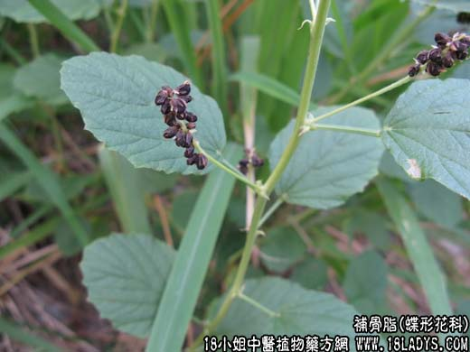

【中药概述】
补骨脂为豆科一年生草本植物补骨脂的种子。苦、辛，大温。归肾、脾经。
1．助阳补肾：用于肾阳不足、命门火衰的阳痿早泄、腰膝冷痛等，如（青娥丸）；肾虚滑精、遗尿、尿频等，可配桑螵蛸，菟丝子，乌药，益智仁等。
2．纳气平喘：用于肾不纳气或肺肾两虚的气喘，有补肾纳气之效，如（黑锡丹）。
3．温脾止泻：用于脾肾阳虚，久泻便溏或五更泻等，如（四神丸）。
4．用于白癜风、斑秃等皮肤疾患。
【药效鉴别】
补骨脂偏于补肾暖脾而固肠止泄。《本草经疏》说“以其暧水脏，补火以生土”，为“壮火益土之要药”。
【临证应用】
寻常疣：补骨脂30g，压碎加入70％乙醇100毫升浸1周，过滤。用时取补骨脂酊滴于疣表面，每日数次至痊愈为止。
【药理作用】
1.可增加冠动脉及末稍血管的流量；
2.对葡萄球菌及常见致病霉菌有一定的抑制作用；
3.对放射疗法引起的白血球下降有改善作用。
【化学成分】
含补骨脂黄酮、异补骨脂查耳酮等黄酮类，及补骨脂素、异补骨素、补骨脂定等香豆素类。
【用量用法】
3——10g，水煎服。
【使用注意】
能伤阴助火，故阴虚火旺及大便燥结者忌。
【附】
盐骨碎补：补肾固齿作用增强，多用于牙齿松动，肾虚牙痛等症。